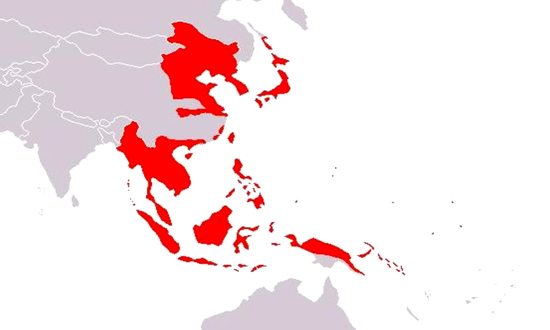

제국주의 열강의 타이완에 대한 침탈이 계속되자 청나라는 심보정 및 정일창 등을 파견하여 타이완의 계속적인 개발과 방어를 시도하면서, 1822년타이완을 청나라의 22번째 성으로 편입시키고, 1823년유명전을 최초의 성장으로 파견하였다.
1895년 청일전쟁에서 청나라가 패하자 일본과의 시모노세키 조약으로 청나라는 타이완을 일본에 할양하였다.
역사 2

식민지 통치 50년 동안 일본은 타이완을 일본 본토에 대한 식량 공급기지 및 일본 공산품의 소비기지로 만들기 위한 정책을 지속적으로 실시하였다.
역사 3
1945년 8월 일본이 타이완을 연합국에 양도한 후, 국민당은 정부군을 타이완에 파견하면서 인수 작업을 실시하였다.
1949년 5월 중국국민당은 공산군의 공격이 거세지자 타이완에 계엄령을 선포하고 30만명의 국민당 군대를 타이완에 진주시켰다. 같은 해 10월에는 광동 등지의 대규모 접전에서 공산군에게 패배하자, 12월부터 타이완으로 중화민국의 정부를 완전히 이전하였다.
본래는 중화민국 베이핑(현 중국 베이징시) 고궁(자금성)에 있었으나 국공내전 시기인 1948년 장제스의 명령으로 그 유물 거의 대부분을 대만으로 실어와 타이중시 등지에 일시 보관하다가 1965년 11월 12일 타이베이에서 재개관하여 현재에 이르고 있다. 엄청난 양의 유물 때문에 가끔 세계 3대 박물관에 포함 된다는 말도 있다.
관광지 2
중화민국 타이베이에 위치한 아시아 최대의 동물원이다. 정식 명칭은 타이베이시립동물원이지만 보통 타이베이동물원으로 부른다. 또한 동물 종류는 약354종, 동물 숫자는 약2407 마리가 있다.
관광지 3
이름은 장제스의 본명인 장중정에서 따왔다. 1975년 장제스가 사망하자 중화민국 정부에서 애도의 뜻을 표하기 위해 크고 아름답게 지었다고 한다. 장제스의 동상 앞에서 꿈쩍도 안 하며 경비하는 근위병의 모습이 장관이며 매시 정각마다 하는 근위병 교대식이 유명하다.
여행 팁
방문하기 좋은 시기:(10월~4월) 봄, 가을, 겨울은 적당히 시원 쾌적하고, 겨울엔 일교차가 심하지만 전반적으로 기온이 온화한 편이다.
언어: 대만어. 대만에서 사용되는 언어는 4가지가 있습니다. 번체 중국어，대만어，객가어，원주민어가 있습니다.
통화:신대만 달러 (NT$)
교통: 남북 연결로와 서쪽 지방의 도로망은 잘 발달해 있지만 대만 지형 특성상 동서를 가로지르는 도로망은 상당히 부실하다.